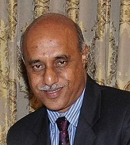

Dr. D Shantharam
QUALIFICATIONS
Senior Consultant , MBBS, MD, 20 years of experience
Awards
1- Best Teacher Award, 2011 Conferred by Tamil Nadu Dr. MGR Medical University
2- Best Doctor Award, 2011 Conferred by Govt. General Hospital and Madras Medical College Chennai
ABOUT DOCTOR
Dr. D Shantharam is a renowned Diabetologist practising successfully for more than 20 years.
He is proficient in Diabetology and Diabetes Management.
He offers treatment for Diabetes Mellitus, Insulin Treatment, Type 1 Diabetes, Type 2 Diabetes, Hypertension and Diabetes Complications.
He also provides Diabetes Diet Counselling to his patients.
The doctor has served as the 8th Vice-Chancellor of Tamil Nadu Dr. M.G.R. Medical University.
He was the recipient of Best Teacher Award, 2011 Conferred by Tamil Nadu Dr. MGR Medical University and Best Doctor Award- 2011 Conferred by Govt. General Hospital and Madras Medical College Chennai.
He is a member of the Indian Medical Association (IMA) and Joint Secretary for the Diabetes Association of India, (Southern Chapter), and the Treasurer for the Diabetes Alumni Association.
He has attended workshops and National and International conferences organized by the American Diabetic Association, International Diabetic Federation and European Association for Study of Diabetes and delivered lectures in them.
The doctor is also involved in arranging training camps for doctors and paramedical staff for Diabetes management.
He is a faculty for the certificate course in Evidence-Based Diabetes Management at the Public Health Foundation of India.
He has been appointed as a Faculty for the certificate course in Diabetes conducted by the Tamil Nadu Government for the practicing Physicians especially from rural Tamil Nadu.
He is also associated with organizing Diabetes Camps and Diabetes awareness programmes periodically.
SPECIALIZATION :
Thyroid Disorder Treatment
Type 1 Diabetes Treatment
Type 2 Diabetes Treatment
Hypertension Treatment
Anemia Treatment
Insulin Treatment
Diabetes Management
Diabetes Complications
Diabetes Mellitus
Diabetic Diet Counselling.
List Of Treatments
Thyroidectomy
WORK EXPERIENCE
Senior Consultant, Apollo Hospitals, Greams Road, Chennai
Senior Consultant, Indraprastha Apollo Hospital, New Delhi